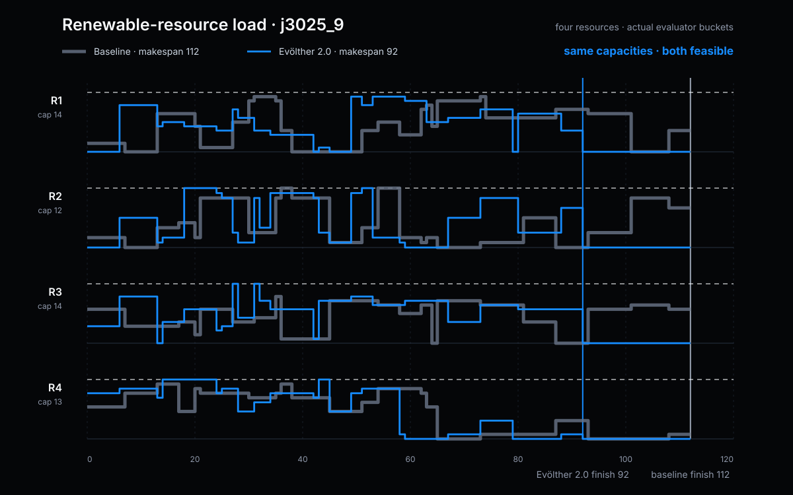
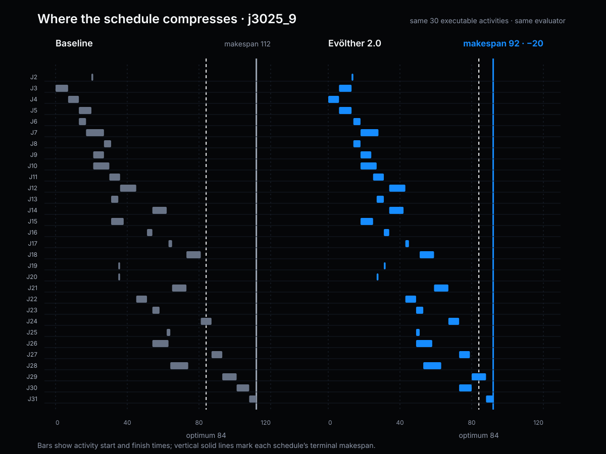

Frozen baseline
The original deterministic priority rule establishes the common reference on 80 PSPLIB J30 instances.
14.312reference
Operational planning · Updated August 2026
A deterministic activity-ranking policy improved across independent search campaigns while the benchmark, objective, and feasibility checks stayed fixed.
10.108−29.37%
The current incumbent improves the original 14.312 baseline by 29.37% and the previous public incumbent by a further 16.37%, with all 80 schedules remaining feasible.
This ledger records only validated checkpoints. Evölther and Evölther 2.0 use the same evaluation contract, so their accepted results remain directly comparable.
The original deterministic priority rule establishes the common reference on 80 PSPLIB J30 instances.
The original system produced the first published incumbent under the frozen benchmark contract.
The updated system reached a stronger accepted policy with a substantially shorter outer optimization cycle.
The comparison is anchored in accepted benchmark results. Generation counts remain useful provenance, while the primary claim is the quality of the validated incumbent produced by each system.
The original optimization system established the first public improvement over the deterministic baseline.
The updated optimization system found a stronger policy with fewer outer generations while preserving the same deterministic validation boundary.
The new rule improves the aggregate and the difficult tail. It wins against the previous incumbent on 30 instances, ties on 30, and loses on 20; the claim is portfolio-level, not universal dominance.
Down from 7.13% at the baseline and 6.04% at the previous incumbent.
Tail quality improves from 20.52% at baseline and 17.28% previously.
No feasibility penalty and no invalid priority values.
Exact-optimum hit rate increases to 33.75%.

This note reports a deterministic dispatch rule for the Resource-Constrained Project Scheduling Problem (RCPSP). On a frozen public subset of PSPLIB J30, the accepted score progressed from 14.312 at baseline to 12.087 with Evölther and 10.108 with Evölther 2.0. The current result is a 29.37% reduction from baseline and preserves feasibility on all 80 evaluated instances.
The benchmark is deliberately external and bounded. Every portfolio instance has a proven optimal makespan, so the score measures schedule quality against a reference optimum rather than machine speed. This is a benchmark result on the fixed portfolio, not a claim that every RCPSP instance or production-planning workflow is solved.
RCPSP schedules activities subject to precedence constraints and renewable-resource limits. An activity may start only after all predecessors finish, and the total demand of concurrently active activities must stay within available capacity. The objective is to minimize the project makespan, the finish time of the terminal activity.


The evaluator uses serial schedule generation. At each step it identifies eligible activities, scores them with the candidate policy, selects one, and places it at the earliest resource-feasible start. The optimization surface is therefore narrow: Evölther changes the priority policy, not the feasibility validator.
The public portfolio contains 80 frozen PSPLIB J30 single-mode instances: parameters 1, 7, 13, 19, 25, 31, 37, and 43 crossed with instances 1 through 10. Each instance contains 32 jobs including dummy source and sink activities, renewable-resource capacities, precedence arcs, and a proven optimal makespan.
| Field | Public contract |
|---|---|
| Dataset | PSPLIB J30 single-mode RCPSP |
| Portfolio | 80 frozen instances |
| Reference | Proven optimal makespan for every instance |
| Objective | mean_gap_pct + 0.35 × p95_gap_pct + feasibility_penalty |
| Direction | Lower is better; feasibility penalty must remain zero |
For instance k, the gap is the candidate makespan minus the proven optimum, divided by that optimum. The accepted objective combines mean portfolio quality with a 35% weighting on the 95th-percentile gap. A candidate must also return finite priorities, choose only eligible activities, schedule every activity exactly once, respect all precedences, and remain within every resource capacity.
The current Evölther 2.0 candidate keeps the serial schedule generator unchanged and replaces only the deterministic activity-ranking policy. The rule combines precedence depth, duration, successor structure, feasible-start information, bottleneck pressure, aggregate resource pressure, and remaining downstream work. This remains an inspectable dispatch heuristic rather than a replacement solver.
Open the full executable accepted candidate or inspect the evaluation contract.
The accepted history contains three directly comparable checkpoints. Figure 3 shows the score progression without forcing the two Evölther systems onto one synthetic generation axis.

| Metric | Baseline | Evölther | Evölther 2.0 |
|---|---|---|---|
| Acceptance score | 14.312 | 12.087 | 10.108 |
| Mean gap | 7.13% | 6.04% | 5.01% |
| P95 gap | 20.52% | 17.28% | 14.57% |
| Exact optima | — | 19 / 80 | 27 / 80 |
| Validated schedules | 80 / 80 | 80 / 80 | 80 / 80 |


The aggregate does not conceal the difficult cases. Figure 7 keeps the eight largest residual gaps visible, including their current makespan and proven optimum.

This result is limited to the frozen 80-instance PSPLIB J30 subset. It does not claim evaluation over all 480 J30 instances, measure production integration behavior, or establish robustness under different project distributions. The accepted rule remains a dispatch heuristic; other project classes, resource models, or operational priority policies require a new evaluation contract.
The public bundle includes the accepted candidate, evaluation contract, retained metrics, provenance, replay confirmation, and figures. Replaying the result requires the same portfolio, proven optima, score formula, and lower-is-better direction. Changing the instance set or objective creates a new evaluation.
The policy was repeatedly evaluated on this frozen 80-instance portfolio. It must be tested on reserved J30 instances and broader J60/J120 distributions before making a generalization claim. The public result is the deterministic improvement under this contract.